01ภาพรวม
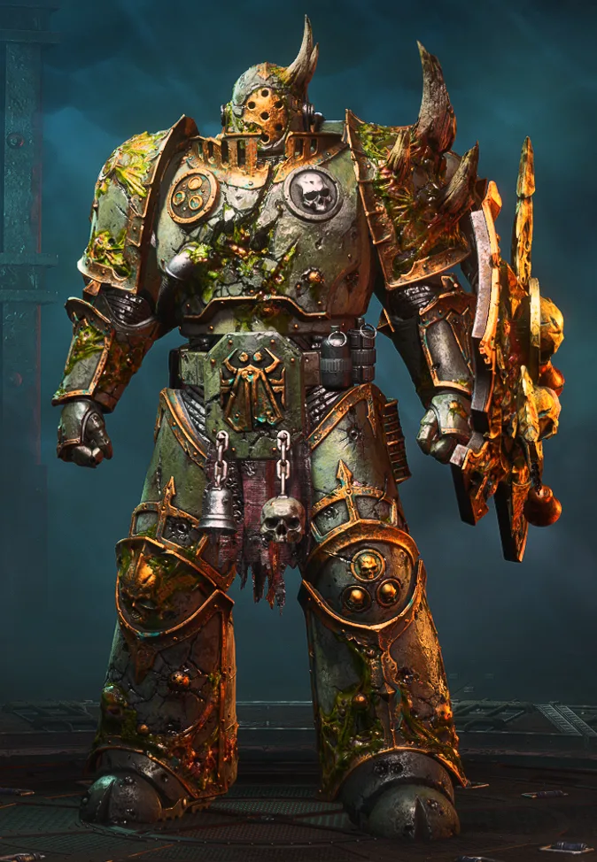
นักรบโรคระบาดแห่ง Nurgle ที่เน่าเปื่อยแต่แทบฆ่าไม่ตาย
02ต้นกำเนิด
Legion ที่ 14 ภายใต้ Mortarion ระหว่าง Heresy ติดอยู่ใน Warp และถูกโรคระบาด Destroyer Plague จนต้องถวายตัวแก่ Nurgle
03เนื้อเรื่องเจาะลึก
Barbarus และความเกลียดชังต่อผู้ใช้พลังจิต
Mortarion เติบโตบนดาว Barbarus ใต้การปกครองของขุนนางพ่อมดที่อยู่บนภูเขาเหนือหมอกพิษ เขาเกลียดพ่อมดจนฝังใจ และเกลียดที่จักรพรรดิแย่งชัยชนะเหนือผู้ปกครองดาวไปจากเขา
Terminus Est และการตกสู่ Nurgle
ระหว่างเดินทางไป Terra ยานของ Death Guard ติดอยู่ใน Warp Typhus ปล่อยโรคระบาดที่ทำให้ทุกคนป่วยหนักแต่ไม่ตาย Mortarion ยอมขายวิญญาณให้ Nurgle เพื่อ "ช่วย" ลูกน้อง — และพวกเขาก็กลายเป็นกองทัพโรคระบาด
04ยุค 30K — ในยุค Great Crusade และ Horus Heresy
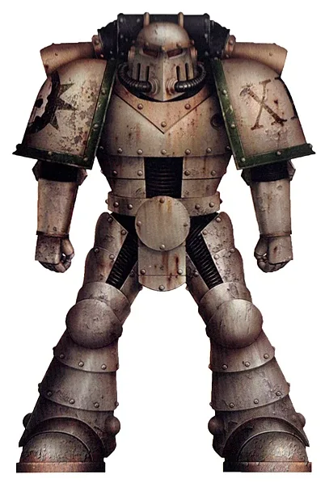
ยุค 30K (เดิมชื่อ Dusk Raiders เกราะสีเทา) เป็นนักรบที่อดทนที่สุด ทนพิษและเดินหน้าไม่หยุด
ดูภาพรวมยุค 30K ทั้งหมดที่ เนื้อเรื่องยุค 30K และความต่างของสองยุคที่ เปรียบเทียบ 30K vs 40K
05นิสัยและวัฒนธรรม
- รักใน 'พร' ของ Nurgle — โรคคือของขวัญ
- จัดระเบียบเป็น 7 Plague Company ตามเลขศักดิ์สิทธิ์ของ Nurgle
- ยังรักษาวินัยทางทหารแบบ Legion ไว้ได้มากกว่ากลุ่มอื่น
06จุดที่น่าสนใจ
- Plague Marines: ร่างกายเน่าเปื่อยแต่ไม่รู้สึกเจ็บ
- Typhus: พาหะของฝูงแมลงวันปีศาจ
07ความสามารถพิเศษ
สิ่งที่ทำให้ Death Guard แตกต่างจากทัพอื่น — ทั้งพลังที่ติดตัวมาทั้งเผ่า/ทัพ และความสามารถของบุคคลสำคัญ
ของทั้งเผ่า/ทัพ
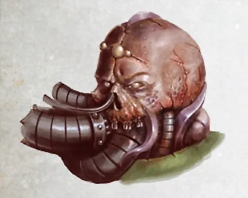
Nurgle's Rot — ป่วยแต่ไม่ตาย
ร่างกายของ Death Guard เน่าเปื่อยด้วยโรคระบาดของ Nurgle แต่พวกเขาไม่รู้สึกเจ็บ ทนกระสุนและบาดแผลได้มากกว่า Space Marine ทั่วไป — ชื่อของพวกเขาคือความทนทาน
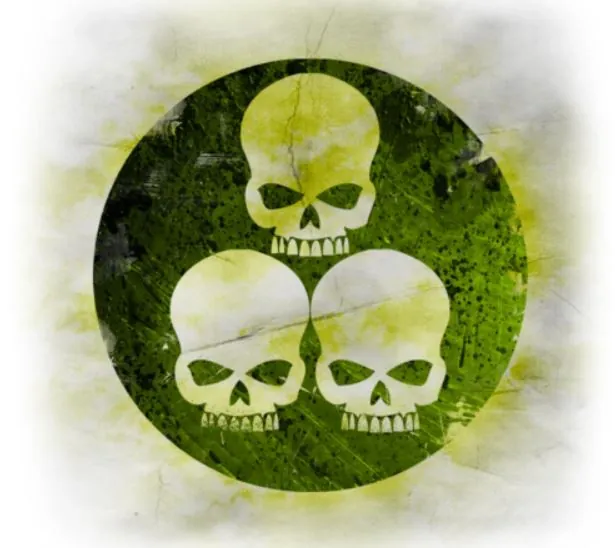
อาวุธแพร่เชื้อ
ระเบิดโรค (Blight Grenade) มีดพิษ และกระสุนที่เต็มไปด้วยไวรัส บาดแผลเล็กน้อยก็ทำให้เหยื่อเน่าตายได้
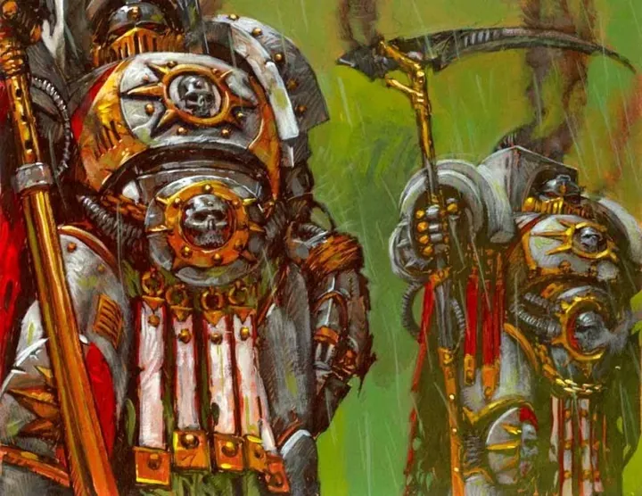
ระบบเลข 7
จัดองค์กรตามเลข 7 ศักดิ์สิทธิ์ของ Nurgle — Plague Company 7 กอง แต่ละกองแบ่งย่อยเป็น 7 ส่วน
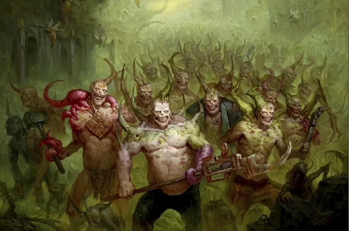
Poxwalkers
มนุษย์ที่ติดไวรัส Walking Pox กลายเป็นซอมบี้ที่ยังรู้สึกตัว เหยื่อทุกคนที่ถูกฆ่ากลายเป็น Poxwalker ต่อ
ของบุคคลสำคัญ
Mortarion
Daemon Primarch of Nurgleถือเคียว Silence และมีปีกแมลงวันเน่า สูดก๊าซพิษเป็นลมหายใจ นำ Plague Wars บุก Ultramar ด้วยตัวเอง

Typhus
Herald of Nurgleอดีต First Captain ผู้ทรยศ ในร่างของเขามีรังแมลงวัน (Destroyer Hive) ที่พ่นออกมาทำลายศัตรู เดินทางไปทั่วกาแล็กซีเพื่อแพร่โรค
08หน่วยและบทบาทในกองทัพ
Death Guard รับใช้ Nurgle เทพแห่งโรคระบาด โครงสร้างเป็นระบบเลข 7 (เลขศักดิ์สิทธิ์ของ Nurgle) มี Plague Company 7 กอง และตำแหน่งที่เกี่ยวกับการผลิตและแพร่เชื้อโรค
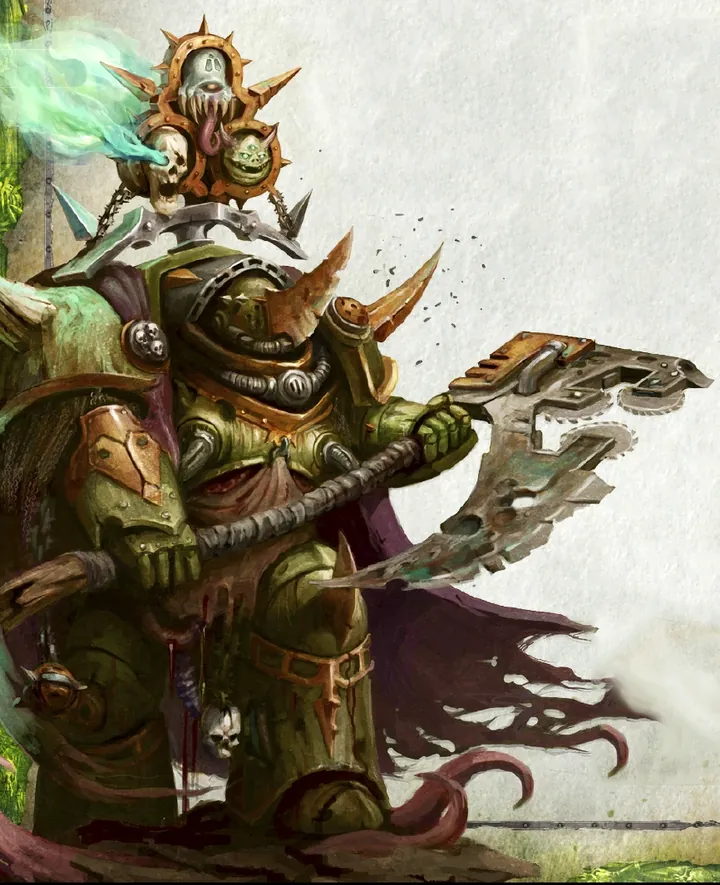
Lord of Contagion
ลอร์ดออฟคอนเทเจียนผู้นำที่สวมเกราะ Terminator ที่เรียกว่า Cataphractii ผุพัง ถือเคียว Plaguereaper
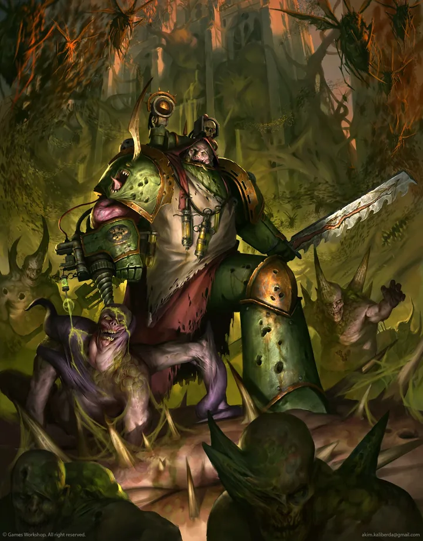
Plague Surgeon
เพลกเซอร์เจียน"หมอ" ของ Death Guard — อดีต Apothecary ที่ยังเก็บ Gene-seed แต่ตอนนี้ปลูกเชื้อโรคในร่างพี่น้องแทนรักษา
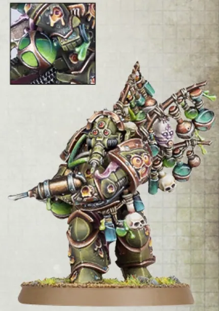
Biologus Putrifier
ไบโอโลกัส พิวทริฟายเออร์นักวิทยาศาสตร์โรคระบาด หมักเชื้อไวรัสและระเบิดโรคระบาดชนิดใหม่
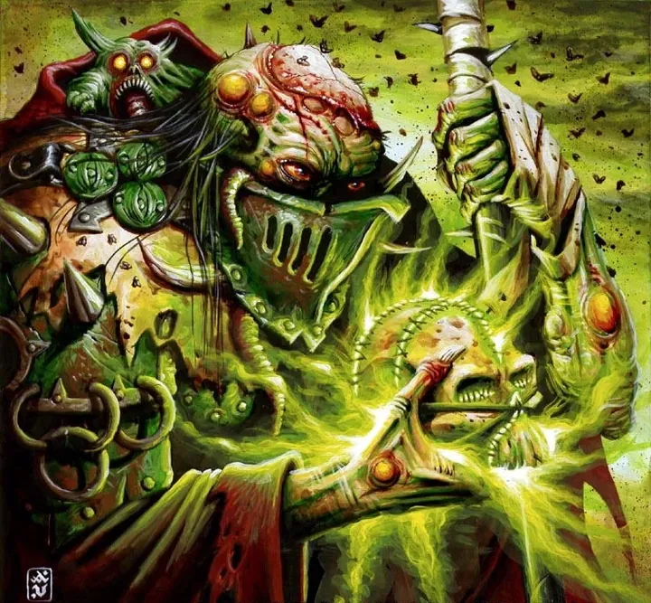
Malignant Plaguecaster
มาลิกแนนต์ เพลกแคสเตอร์พ่อมดที่อาเจียนพลังโรคระบาดใส่ศัตรู
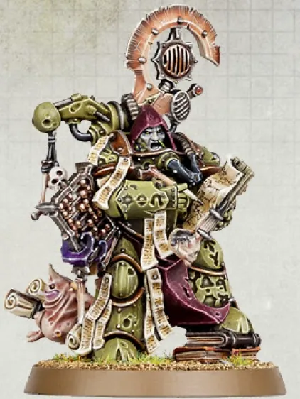
Tallyman
ทัลลีแมนผู้นับจำนวนโรคและศพเพื่อถวาย Nurgle ความสามารถนับของเขาช่วยวางแผนรบได้
Plague Marines
เพลกมารีนทหารหลักที่ร่างกายเน่าเปื่อยแต่ไม่รู้สึกเจ็บ ทนทานเกินมนุษย์ ถือระเบิดโรคและมีดพิษ
Deathshroud
เดธชราวด์องครักษ์ Terminator ส่วนตัวของ Mortarion ถือเคียวยักษ์ ไม่พูดไม่คุย
Poxwalkers
พอกซ์วอล์กเกอร์มนุษย์ที่ติดเชื้อ Walking Pox กลายเป็นซอมบี้ที่ยังรู้สึกตัว — ใครถูกฆ่าก็กลายเป็นซอมบี้ต่อ
หน่วยทั่วไปของ Chaos Space Marines (Sorcerer, Warpsmith, Dark Apostle ฯลฯ) ดูได้ที่ หน่วยและบทบาทของ Chaos Space Marines
09วีรกรรมและเหตุการณ์สำคัญ
ติดอยู่ใน Warp
กลายเป็นของ Nurgle
Plague Wars
บุก Ultramar
บุก Medusa
Typhus โจมตีดาวบ้านเกิดของ Iron Hands
10ตัวละครสำคัญ
Typhus
Herald of Nurgleอดีต First Captain Calas Typhon

Mortarion
Daemon PrimarchThe Death Lord
11ยุค 40K — สหัสวรรษที่ 41
ยุค 40K Death Guard แพร่โรคระบาดไปทั่วกาแล็กซี
12เนื้อเรื่องล่าสุด (Era Indomitus / M42)
Mortarion นำ Plague Wars จากกลุ่มดาว Scourge Stars และปรากฏตัวในสมรภูมิบ่อยขึ้น
หลังการเกิด Great Rift ปฏิทินของจักรวรรดิคลาดเคลื่อน เหตุการณ์ยุคปัจจุบันจึงมักระบุเพียง 'M42' ไม่มีปีที่แน่นอน
13แกลเลอรี
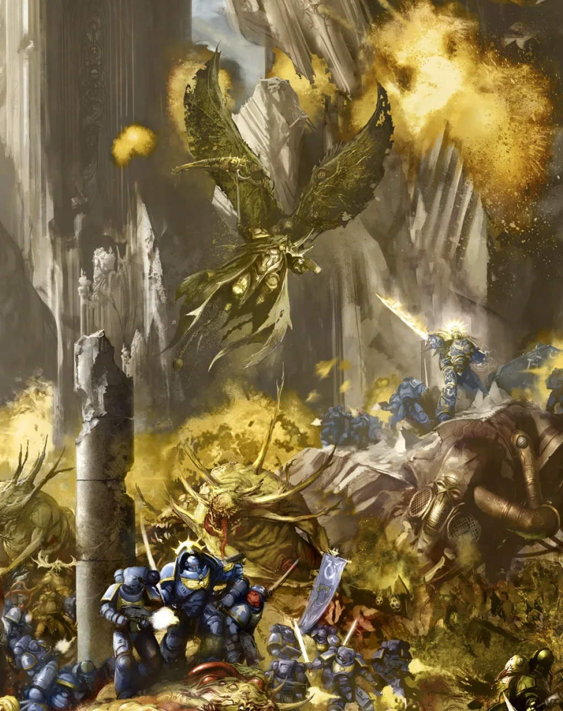
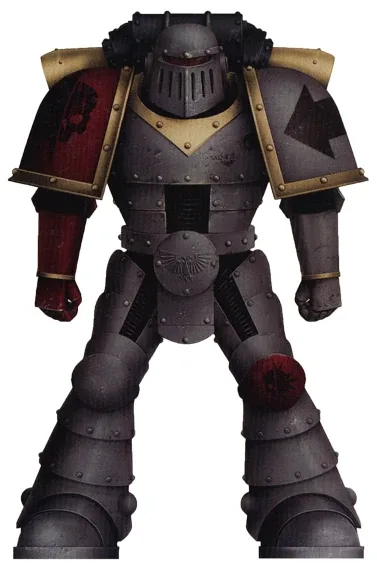
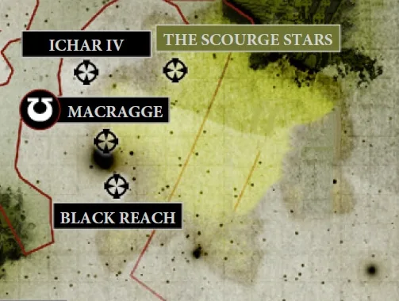